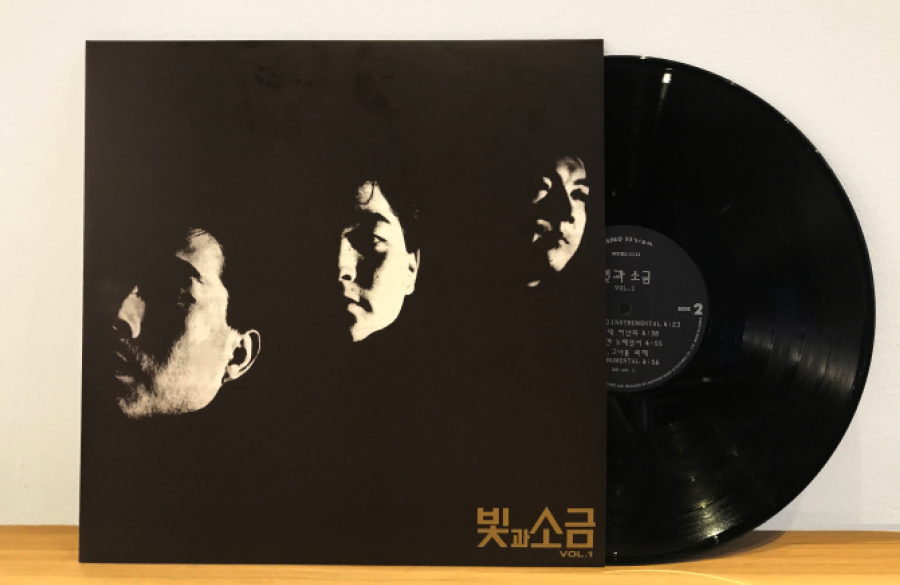

국내 City Pop

빛과 소금 - 샴푸의요정
네모난 화면 헤치며 살며시 다가와
은빛의 환상 심어준 그녀는 나만의 작은 요정
이른 아침 안개처럼 내게로 다가와
너울거리는 긴 머리 부드런 미소로 속삭이네
그녀만 보면 외롭지 않아 슬픈 마음도 멀리 사라져
그녀는 나의 샴푸의 요정 이제는 너를 사랑할거야
이른 아침 안개처럼 내게로 다가와
너울거리는 긴 머리 부드런 미소로 속삭이네
그녀만 보면 외롭지 않아 슬픈 마음도 멀리 사라져
그녀는 나의 샴푸의 요정 이제는 너를 사랑할거야
멀리서 나홀로 바라보던 그녀는 언제나 나의 꿈